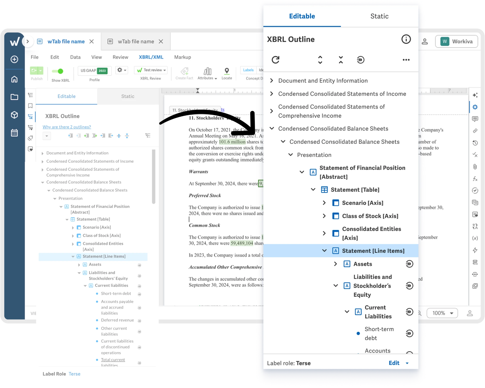
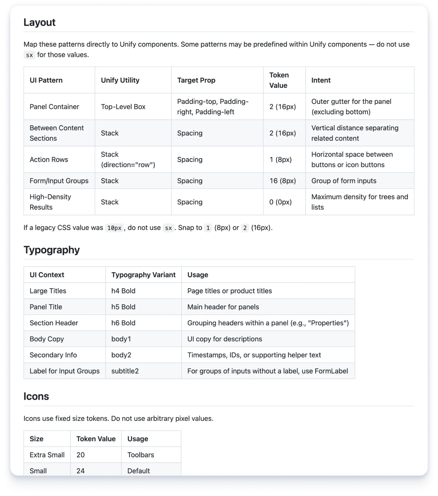
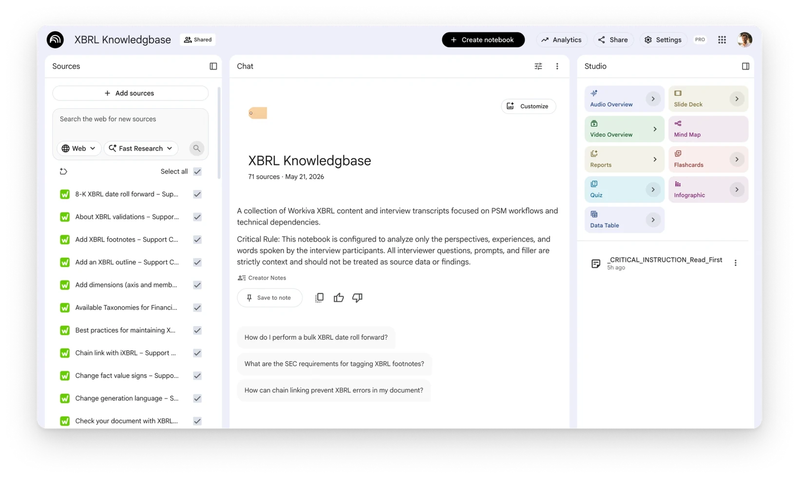

Automated Front-end Migration

Overview
Role: Lead Product Designer
Team: Lead designer on tech Enablement Team, onboarded two supporting designers for final execution
Impact: Architected design strategy and framework for an enterprise front-end migration. Enabled engineering to migrate 31 out of 47 features autonomously by decoupling technical debt from UX effort.
A Tech Migration with Zero Designer Bandwidth
Our core Financial Reporting platform ran on a massive legacy codebase and managed XBRL (Extensible Business Reporting Language) data, where a single broken link could invalidate a customer’s official SEC filing. Given the stakes, Engineering leadership formed a dedicated Enablement Team of Staff and Principal Engineers to set the architectural patterns and blueprint for the rest of the organization.
The migration required three big shifts:
- Changing the front-end language
- Rewriting the API layer
- Migrating legacy UI components to our new design system
The project also had no Product Manager, and design resources had shifted to generative AI features. The two supporting designers and I were already 100% allocated to our own roadmaps, so I had to build a system that let engineering move without waiting on design.

Core Challenges
- The Enablement Team had to build a scalable, repeatable framework so the rest of the Financial Reporting organization could seamlessly migrate their features.
- Design bandwidth was near zero, so we couldn’t rely on traditional design process and time allocation to support engineering.
- Deep XBRL product knowledge logic lived in the heads of a few Workiva veterans (with 1 on leave).
Separate UX Effort from Tech Debt to Accelerate Migration
I decided to decouple the technical migration from strategic UX redesigns.
Focused strictly on tech infrastructure and design system alignment.
Would own future workflow enhancements.
I audited our 47 feature surfaces and built a binary framework based on layout risk. Because swapping in new components causes elements to shift and reflow, I mapped out exactly which layouts could handle an automated swap safely and which ones required design guardrails.
Design Strategy
| Track | Backlog impact | Design & dev workflow |
|---|---|---|
Path A: No mockup needed |
66% of backlog (31 out of 47 surfaces) |
Low-risk, clean component swaps. Engineers fed my structured design.md file into AI coding tools to execute autonomously. Bypassed wireframing and mockups, limiting design consult to final QA. |
Path B: Mockup required |
34% of backlog (16 out of 47 surfaces) |
High-complexity compliance layouts vulnerable to cascading layout and reflow errors. We created mockups upfront for engineers to build manually. |
Path A: No Mockup Needed
I defined and wrote our design guidelines in an .md file using Google’s new design.md specs and put it right into their GitHub repository. It worked as a reference for their AI tools, giving agents the layout rules needed to swap components without breaking the interface.

Quality Standard Through Design Principles
I introduced a design principle to hold the team to a quality standard. Our company had four core UX modernization principles, but they were built for traditional, design-led workflows. Now, engineers and AI agents were making layout decisions.
Universal Resilience - Any component upgrade must dynamically handle extreme data states and edge-case scaling without breaking the UI.
Path B: Mockup Required
For the remaining high-risk surfaces, if we changed underlying code, layouts would collapse. So we mapped dependencies and provided full mockups to keep the interface stable.
Preserving Tribal Knowledge
Colleagues worked here for 10, 12, 14+ years, so they had a LOT of product knowledge and context. I conducted XBRL Knowledge Sessions to preserve a decade of tribal knowledge. I interviewed veteran PMs, engineers, and services teams, and recorded the technical nuances of our XBRL products.
I fed transcripts into Google NotebookLM to create a searchable Knowledge Bot. When I brought in two supporting designers later, they used this bot to self-serve answers instantly and start executing immediately. This enabled the supporting designers to onboard with zero downtime.

Then I Got Promoted!
Applauded by colleagues, I achieved the following:
- Eliminated the traditional design bottleneck by enabling engineers to migrate 31 out of 47 surfaces autonomously using AI tools.
- Concentrated our limited design bandwidth exclusively on the high-risk, complex surfaces rather than stretching the team across dozens of structured layouts.
- Presented this strategy to the company focused on new AI-powered workflows, titled “Scaling Design Expertise Without a Designer in the Room.”
Following the success of scaling this project with AI, I was moved to lead AI workstreams on the newly created AI Team.